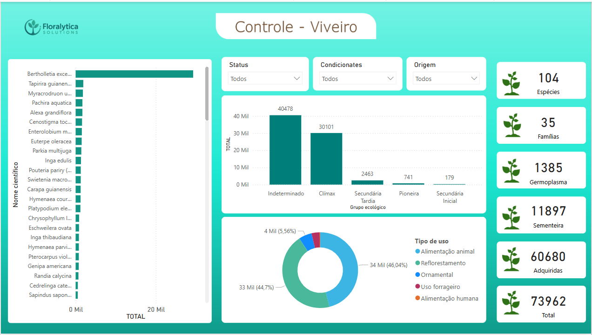

Soluções diretas para análise, automação e visualização de dados ambientais
Sou Engenheiro Florestal com experiência prática em inventário florestal, silvicultura, análise de dados com Power BI, automações com Python e geoprocessamento. Meu foco é gerar soluções diretas e funcionais para o setor ambiental e florestal.
Script que calcula DAP, volume, área basal, índice por hectare, escore Z e gera relatórios automáticos em Word.
Ver ProjetoControle de mudas com indicadores dinâmicos por espécie, grupo ecológico, origem e status de conservação.
 Ver maisProcessamento espacial de dados florestais, zoneamento e APPs.
Ver Projeto